TECHNICAL-CONTROL-1.3 — body / leg phasing removed, especially receive → play / dribble (candidate, not frozen)
LOCAL review page — the character is a real player's model: never published. Lab: http://127.0.0.1:8361/sandbox/visual/technical_control13.html — Body: after · before · before vs after (same simulation), the torture set at the top of the case list, every feet view with the live leg clearances (red = the limbs intersect). I cannot play video in real time: everything here was judged from per-frame measurements and stills; the motion at normal speed and in slow motion is yours to judge. Nothing is frozen or integrated; no new skills were added.
1 · Where the phasing came from, what changed (presentation only — the ball, the path and every contact are untouched)
- The hand-off (run → receive): the legs switched from TURN-1.2's joints to the receive's IK in one frame (knee jumps up to 35 cm). Now the gait's joint channels blend into the plan over 0.16 s, the first swing key sits on the hand-off frame with the running foot's own velocity, and a planted heel continues from the gait's height.
- Re-plans at every contact: a new plan used to re-evaluate the pelvis and the legs from the revised future (pelvis jumps of 3 – 10 cm, a foot lifted out of its stance at full swing pace). Now the pelvis, upper body and the swinging legs continue from what was actually posed and blend over 0.12 s; a foot the new gait lifts while it was still down stays 50 ms longer and peels its heel (cut short when the leg can no longer reach it).
- The pelvis: the reach pull of a newly planted foot ramps in over 80 ms (it pulled at full strength from the touchdown frame), holds until the lift and fades after; landings stay within 95 % of the leg; a 7-sample smoothing kernel.
- Leg self-clearance: every swing is planned against the other leg (boot, shin, thigh, knee) and the ball's predicted path, with smooth bumps that combine every overlapping pair; it uses the swing's own posed knee and toe (a boot pointed for the laces hangs its toe 20 cm lower); a pointed toe never into the turf; a residual layer at most 1.5 cm.
- Through-stance turns: a swing round a planted foot while the body turns 20 – 180° is planned in the turning body's frame about the standing ankle — the foot keeps its own side and travels round with the turn (it used to sweep straight through the standing leg as the body turned past it).
- Plants: a landing is kept clear of the other foot and of the spot where the other boot will play the ball next (seen once both feet's swings exist); the receive's standing foot clear of the incoming pass.
- Planted feet: a foot turning on its edge turns about that edge; a planted foot the body would turn more than 110° round leaves the turf early.
- Transition state at every contact (support, weight, both feet's positions and velocities, stride phase, pelvis, hips, centre of mass, yaw rate, the follow-through) —
evidence/tc13_transition_states.json. Flagged early: a swing whose clearance the plan cannot resolve is flagged when first planned (≈ 0.3 – 0.4 s before its contact).
2 · The numbers — before (TECHNICAL-CONTROL-1.2) → after, the torture set
| 26 torture cases each | 99 / 99 / 99 | 80 / 80 / 80 | 50 / 50 / 50 | |||
|---|---|---|---|---|---|---|
| before | after | before | after | before | after | |
| frames with intersecting legs (beyond 1.2 cm) | 496 | 14 | 962 | 45 | 987 | 61 |
| … inside the transition window (receive → 0.25 s after the 2nd carry touch) | 468 | 14 | 932 | 43 | 912 | 58 |
| cases with any intersection | 14 | 3 | 21 | 6 | 19 | 4 |
| worst limb separation in the window, cm (negative = overlap) | -14.9 | -6.3 | -15 | -10.1 | -15 | -9.8 |
| pelvis acceleration p99, median case, m/s² | 764.4 | 220.9 | 753.6 | 240.6 | 757.2 | 254.9 |
| … max, median case | 2399.2 | 673 | 2374 | 670.9 | 2331.4 | 680.2 |
| … max, worst case | 4294 | 712 | 5485 | 808 | 6510 | 1063 |
| ankle acceleration p99, median case, m/s² | 646.8 | 563.3 | 706 | 482.9 | 470.2 | 456.8 |
| … max, median case | 6586.1 | 2375.4 | 6880.4 | 1973.2 | 6718.9 | 2100 |
| … max, worst case | 21948 | 13044 | 19622 | 6356 | 16253 | 6009 |
| trajectory pops per case (pelvis > 400 / ankle > 2500 m/s²), median | 48.5 | 7.5 | 48 | 7.5 | 46.5 | 8.5 |
| … total | 1273 | 191 | 1311 | 210 | 1239 | 277 |
| knee angle jerk p99, median (×10³ °/s³) | 286.8 | 157.1 | 306.3 | 162.2 | 295.3 | 161.4 |
| planted-foot slip at its support point, median case, mm | 9.6 | 2 | 12.8 | 4 | 12.2 | 4.9 |
| … worst case | 67.5 | 26.3 | 82 | 37 | 77.1 | 46 |
| instant support swaps (one foot lifts as the other lands, same frame) | 0 | 0 | 0 | 0 | 0 | 0 |
| stances shorter than humanly possible | 0 | 0 | 0 | 0 | 0 | 0 |
| swings shorter than humanly possible | 0 | 0 | 0 | 0 | 0 | 0 |
| shortest time between weight transfers, s | 0.158 | 0.158 | 0.179 | 0.179 | 0.179 | 0.179 |
| IK correction p99 (leg short + pushes), median, cm | 4.3 | 4.3 | 4.3 | 2.7 | 4.2 | 1.6 |
| … worst, cm | 17.8 | 24.1 | 19.1 | 23.8 | 24.5 | 18.3 |
| hand-off (run → receive) knee jump, worst, cm | 35.1 | 3.1 | 35.1 | 3.3 | 40.5 | 3.6 |
| hand-off pelvis acceleration, worst, m/s² | 700 | 700 | 700 | 700 | 700 | 700 |
| gameplay fingerprint identical (ball every tick, path, contacts) | 26/26 | 26/26 | 26/26 | |||
Diagnostics on the posed skeleton at 240 Hz (tools/tc13_phase.mjs): limbs as capsules (thigh 7.5, shin 5.2, boot 4.8, knee 6 cm), intersection beyond 1.2 cm; slip at the posed support point (the edge it rolls on, else the ball of the foot).
3 · The torture set (both turn sides; 99 / 99 / 99)
ground receive → straight carry (sprint, from behind) · ground receive → 30° carry · receive → 60° cut · receive → 90° turn · half-turn → preferred-foot outside carry (left-dominant close-control carrier) · through-stance turn → carry · sprint receive → first carry touch · receive → same-foot / opposite-foot next touch
Chest → foot → carry and thigh → foot → carry are not in the receive → dribble pipeline (its passes are ground passes; those controls exist only in RECEIVE-KILL-1's standalone study) — not tested here.
ground receive → straight carry (sprint, from behind)
| case (99/99/99) | intersect frames | worst sep cm | slip mm | pelvis acc max | ankle acc max | pops | hand-off knee jump cm |
|---|---|---|---|---|---|---|---|
| RL_0_SPRINT_NORMAL | 0 → 0 | 10.5 → 15 | 0.2 → 6.9 | 2921 → 712 | 17983 → 1499 | 58 → 9 | 35.1 → 2.8 |
RL_0_SPRINT_NORMAL — open in the lab (before | after)
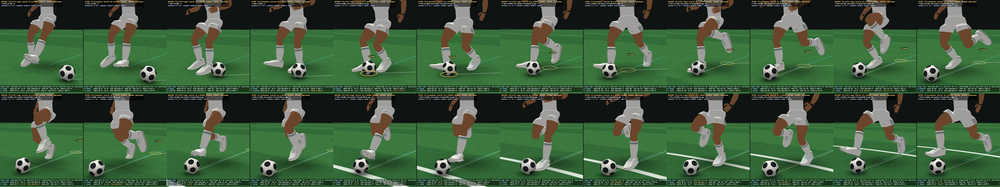
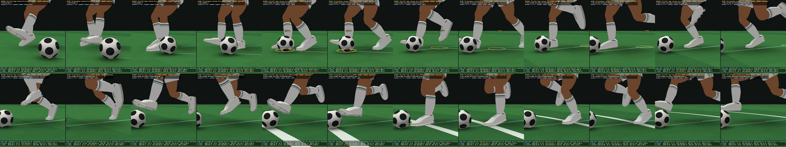
ground receive → 30° carry
| case (99/99/99) | intersect frames | worst sep cm | slip mm | pelvis acc max | ankle acc max | pops | hand-off knee jump cm |
|---|---|---|---|---|---|---|---|
| L_30_RUN_NORMAL | 9 → 0 | -4.5 → 2.9 | 3.6 → 0 | 2479 → 700 | 14840 → 2053 | 53 → 7 | 9.3 → 3.1 |
| L_30L_RUN_NORMAL | 0 → 0 | 7.9 → 11.9 | 0.1 → 2.1 | 2624 → 700 | 16777 → 2874 | 48 → 8 | 10 → 3.1 |
| ST_30_V12 | 15 → 0 | -5.3 → 2.8 | 8.2 → 0 | 858 → 407 | 2507 → 2843 | 36 → 2 | — → — |
| ST_30L_V12 | 0 → 0 | 3.5 → 4.2 | 10.3 → 0.9 | 908 → 484 | 1140 → 717 | 30 → 3 | — → — |
L_30_RUN_NORMAL — open in the lab (before | after)
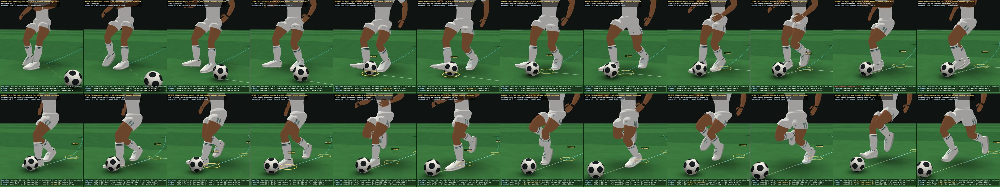
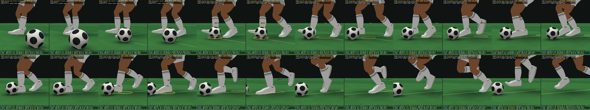
L_30L_RUN_NORMAL — open in the lab (before | after)
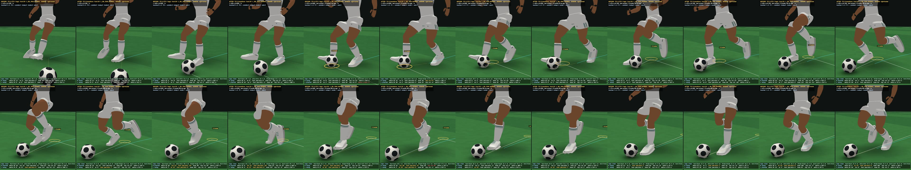
ST_30_V12 — open in the lab (before | after)
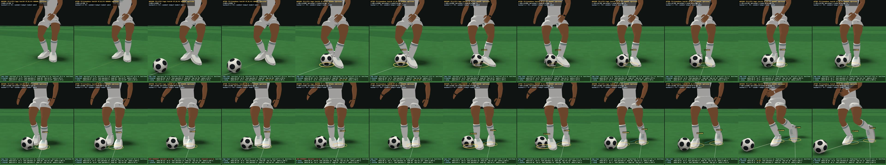
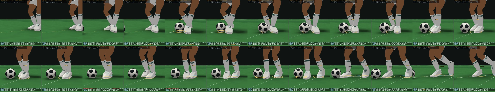
ST_30L_V12 — open in the lab (before | after)
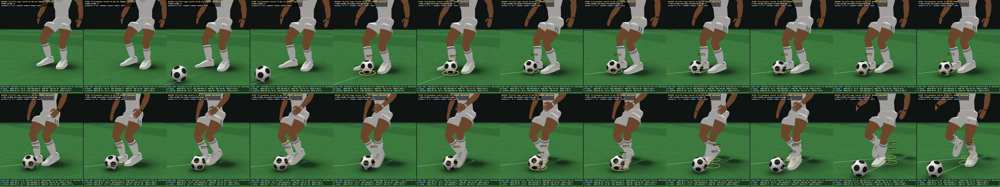
receive → 60° cut
| case (99/99/99) | intersect frames | worst sep cm | slip mm | pelvis acc max | ankle acc max | pops | hand-off knee jump cm |
|---|---|---|---|---|---|---|---|
| L_60_RUN_NORMAL | 0 → 0 | 1.4 → 9.5 | 19.8 → 0.1 | 2357 → 700 | 9843 → 2576 | 51 → 8 | 9.2 → 3.1 |
| L_60L_RUN_NORMAL | 0 → 0 | 3.4 → 4.4 | 2.3 → 1.9 | 2790 → 699 | 12194 → 1307 | 53 → 8 | 12 → 3.1 |
| ST_60_V12 | 7 → 0 | -3 → 1.5 | 12.5 → 0 | 850 → 472 | 2717 → 2389 | 34 → 2 | — → — |
| ST_60L_V12 | 0 → 0 | 6.6 → 4.6 | 18.2 → 0 | 950 → 553 | 1790 → 860 | 30 → 4 | — → — |
L_60_RUN_NORMAL — open in the lab (before | after)
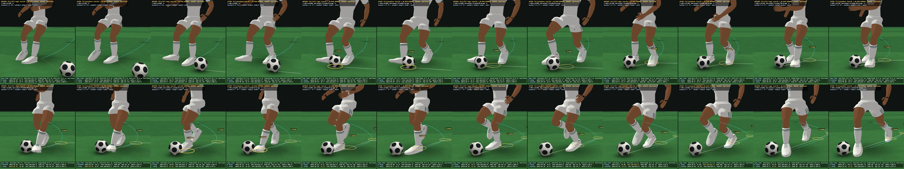
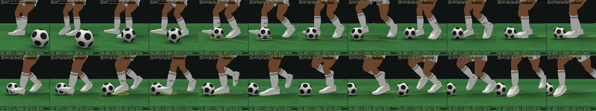
L_60L_RUN_NORMAL — open in the lab (before | after)
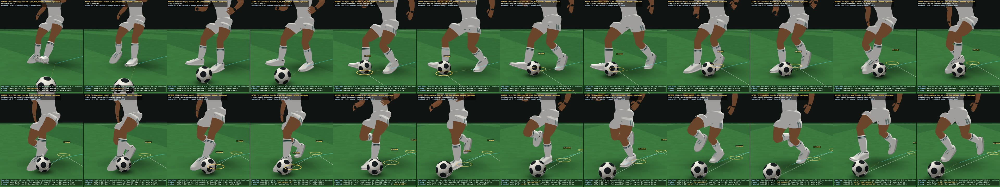
ST_60_V12 — open in the lab (before | after)
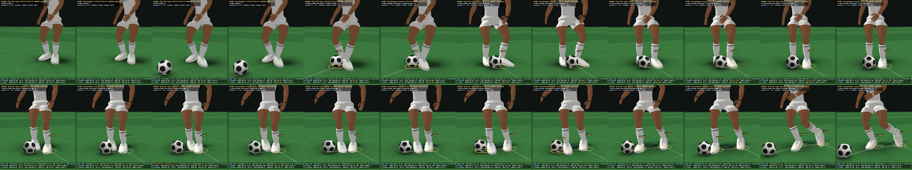
ST_60L_V12 — open in the lab (before | after)
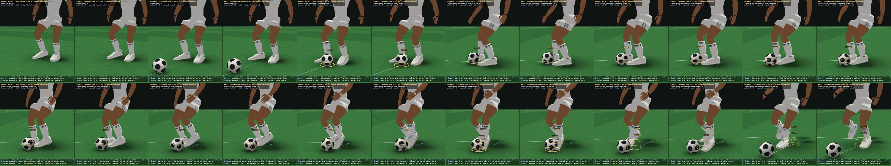
receive → 90° turn
| case (99/99/99) | intersect frames | worst sep cm | slip mm | pelvis acc max | ankle acc max | pops | hand-off knee jump cm |
|---|---|---|---|---|---|---|---|
| L_90_RUN_NORMAL | 0 → 0 | 2.3 → 10.3 | 28.9 → 17.4 | 2719 → 700 | 21948 → 5042 | 67 → 16 | 9.4 → 3.1 |
| L_90L_RUN_NORMAL | 0 → 0 | 12.3 → 9.5 | 3.7 → 1.7 | 4148 → 699 | 12776 → 1337 | 58 → 8 | 9.9 → 3.1 |
| ST_90_V12 | 0 → 0 | 4.1 → 4.7 | 4.3 → 0.5 | 1550 → 555 | 1831 → 784 | 30 → 4 | — → — |
| ST_90L_V12 | 22 → 0 | -9.5 → 1.4 | 16.3 → 0.6 | 1550 → 474 | 1915 → 2394 | 36 → 2 | — → — |
L_90_RUN_NORMAL — open in the lab (before | after)
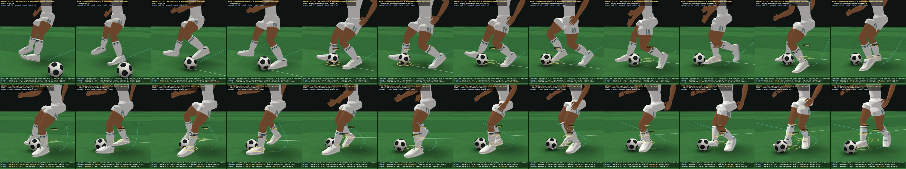
L_90L_RUN_NORMAL — open in the lab (before | after)
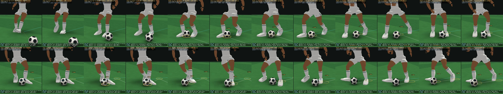
ST_90_V12 — open in the lab (before | after)
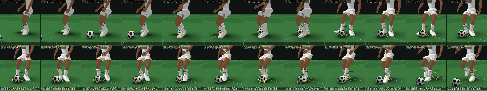
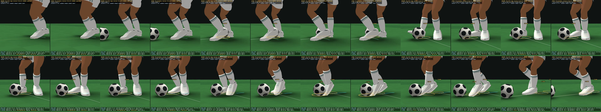
ST_90L_V12 — open in the lab (before | after)
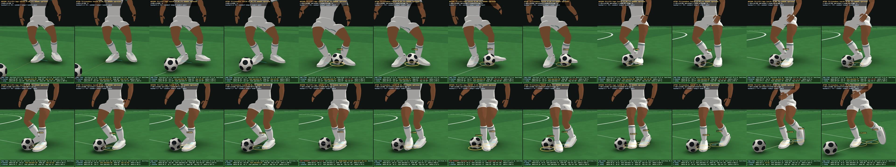
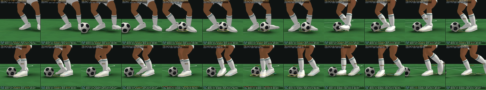
half-turn → preferred-foot outside carry (left-dominant close-control carrier)
| case (99/99/99) | intersect frames | worst sep cm | slip mm | pelvis acc max | ankle acc max | pops | hand-off knee jump cm |
|---|---|---|---|---|---|---|---|
| ST_90_V12 · L · DOMINANT_CLOSE | 22 → 0 | -9.5 → 1.7 | 14.9 → 0.6 | 1550 → 473 | 2020 → 2010 | 34 → 2 | — → — |
| ST_90L_V12 · L · DOMINANT_CLOSE | 14 → 0 | -8.7 → 7.1 | 8.9 → 0.5 | 1479 → 316 | 2794 → 2606 | 37 → 1 | — → — |
| ST_120_V12 · L · DOMINANT_CLOSE | 27 → 0 | -9.6 → 1 | 14.6 → 0.8 | 1323 → 439 | 2568 → 4216 | 34 → 4 | — → — |
| L_60_RUN_NORMAL · L · DOMINANT_CLOSE | 78 → 6 | -10.3 → -6.3 | 7.4 → 11.6 | 2254 → 700 | 6986 → 5096 | 67 → 11 | 7.5 → 3.1 |
ST_90_V12 · L · DOMINANT_CLOSE — open in the lab (before | after)
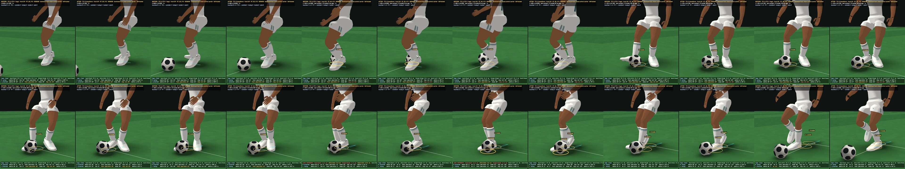
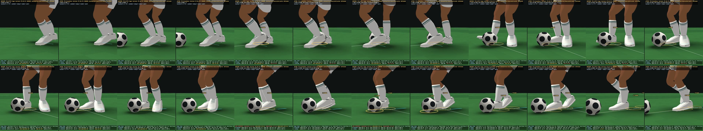
ST_90L_V12 · L · DOMINANT_CLOSE — open in the lab (before | after)
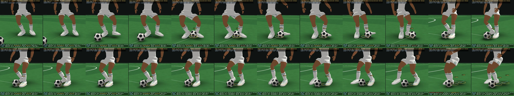
ST_120_V12 · L · DOMINANT_CLOSE — open in the lab (before | after)
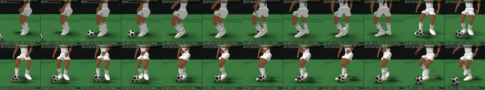
L_60_RUN_NORMAL · L · DOMINANT_CLOSE — open in the lab (before | after)
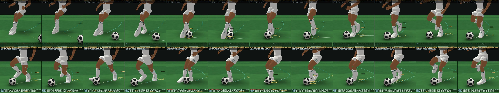
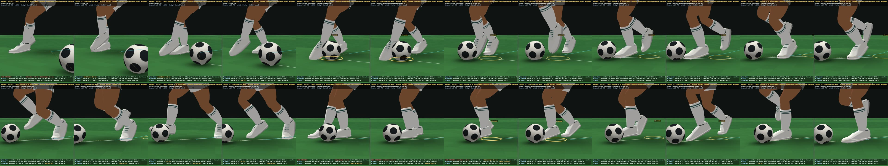
through-stance turn → carry
| case (99/99/99) | intersect frames | worst sep cm | slip mm | pelvis acc max | ankle acc max | pops | hand-off knee jump cm |
|---|---|---|---|---|---|---|---|
| ST_150_V12 | 99 → 2 | -14.9 → -2.2 | 51.4 → 13.8 | 4294 → 516 | 2958 → 5138 | 49 → 7 | — → — |
| ST_180_V12 | 79 → 6 | -14.7 → -4.4 | 67.3 → 17.4 | 2441 → 454 | 5566 → 2362 | 46 → 2 | — → — |
| ST_180L_V12 | 83 → 0 | -14.7 → 1.5 | 67.5 → 17.4 | 2442 → 518 | 6186 → 1224 | 43 → 5 | — → — |
| L_150_RUN_NORMAL | 20 → 0 | -9 → 1.6 | 0.1 → 26.3 | 2158 → 699 | 6149 → 2833 | 57 → 13 | 7.5 → 3.1 |
| L_150L_RUN_NORMAL | 3 → 0 | 12.4 → 9.6 | 5.1 → 16.5 | 2210 → 700 | 9422 → 1682 | 47 → 13 | 9.2 → 3.1 |
ST_150_V12 — open in the lab (before | after)
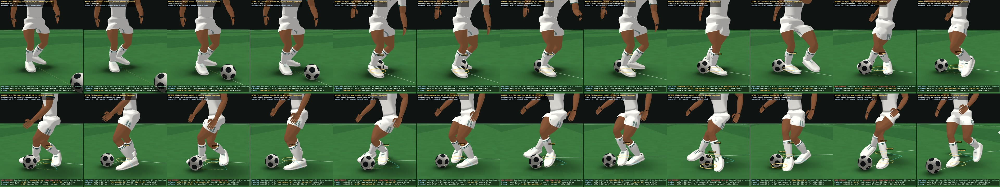
ST_180_V12 — open in the lab (before | after)
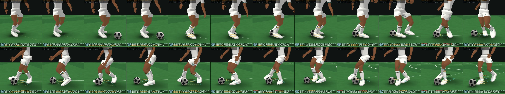
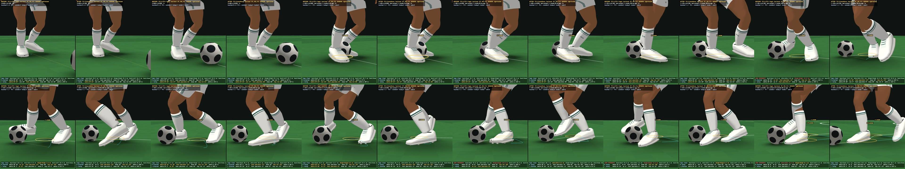
ST_180L_V12 — open in the lab (before | after)
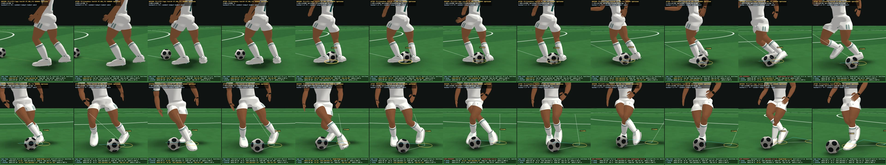
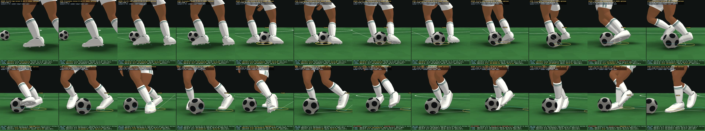
L_150_RUN_NORMAL — open in the lab (before | after)
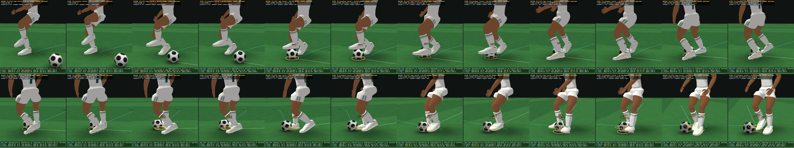
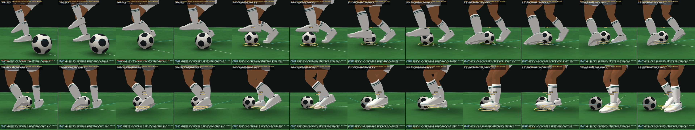
L_150L_RUN_NORMAL — open in the lab (before | after)
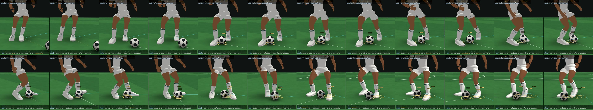
sprint receive → first carry touch
| case (99/99/99) | intersect frames | worst sep cm | slip mm | pelvis acc max | ankle acc max | pops | hand-off knee jump cm |
|---|---|---|---|---|---|---|---|
| L_90_SPRINT_NORMAL | 0 → 0 | 0.3 → 2.6 | 42.4 → 23.7 | 2640 → 680 | 16627 → 5494 | 85 → 16 | 27.7 → 2.8 |
| L_90L_SPRINT_NORMAL | 0 → 0 | 0.1 → 6.7 | 6.9 → 15.4 | 2505 → 680 | 12629 → 1533 | 64 → 10 | 27.5 → 2.8 |
| L_30_SPRINT_NORMAL | 0 → 0 | 10.9 → 15 | 0.1 → 11.4 | 2668 → 683 | 13547 → 1539 | 60 → 8 | 31.8 → 2.8 |
| F_180R_SPRINT_NORMAL | 18 → 0 | -9.3 → 1.9 | 46.7 → 9.9 | 3110 → 666 | 13818 → 13044 | 66 → 18 | 19.6 → 3 |
L_90_SPRINT_NORMAL — open in the lab (before | after)
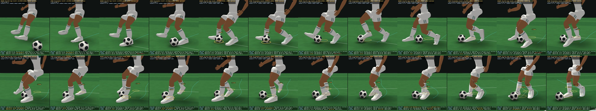
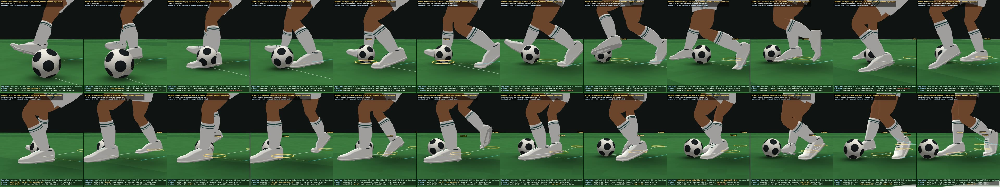
L_90L_SPRINT_NORMAL — open in the lab (before | after)
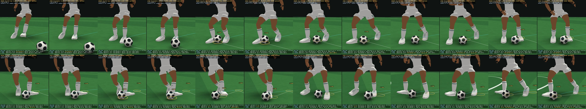
L_30_SPRINT_NORMAL — open in the lab (before | after)
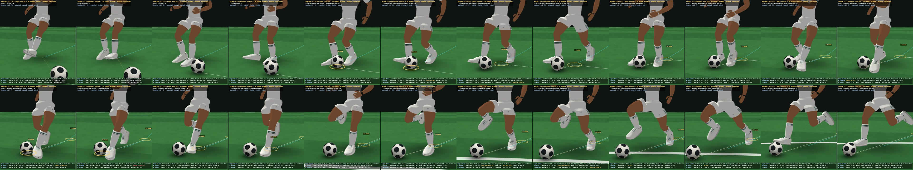
F_180R_SPRINT_NORMAL — open in the lab (before | after)
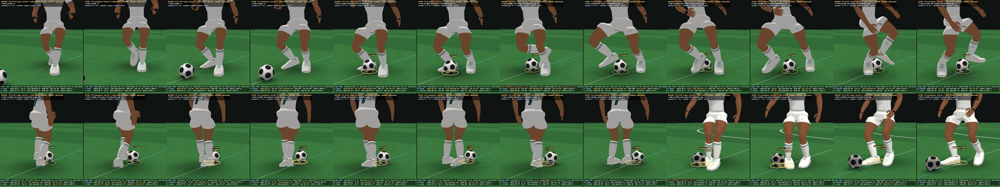
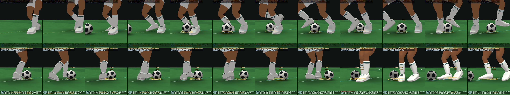
Receive → rapid same-foot second touch · receive → opposite-foot next touch
| case | receive | next touch | kind | gap s | after: intersect frames · pops |
|---|---|---|---|---|---|
| L_30_SPRINT_NORMAL | R inside | L inside | opposite foot | +0.196 | 0 · 8 |
| L_60L_RUN_NORMAL | R inside | L outside | opposite foot | +0.204 | 0 · 8 |
| L_30_RUN_NORMAL | R inside | L outside | opposite foot | +0.204 | 0 · 7 |
| L_60_RUN_NORMAL | R inside | L outside | opposite foot | +0.208 | 0 · 8 |
| L_90_SPRINT_NORMAL | R inside | L inside | opposite foot | +0.217 | 0 · 16 |
| L_90_RUN_NORMAL | R inside | L inside | opposite foot | +0.221 | 0 · 16 |
| L_150L_RUN_NORMAL | R inside | L inside | opposite foot | +0.221 | 0 · 13 |
| F_180R_SPRINT_NORMAL | R inside | L inside | opposite foot | +0.221 | 0 · 18 |
| L_150_RUN_NORMAL | L sole | R inside | opposite foot | +0.221 | 0 · 13 |
| L_90L_RUN_NORMAL | R inside | L inside | opposite foot | +0.233 | 0 · 8 |
| L_90L_SPRINT_NORMAL | R inside | L inside | opposite foot | +0.233 | 0 · 10 |
| ST_30_V12 | L inside | R outside | opposite foot | +0.338 | 0 · 2 |
| ST_30L_V12 | R inside | L laces | opposite foot | +0.338 | 0 · 3 |
| ST_60_V12 | L inside | R outside | opposite foot | +0.342 | 0 · 2 |
| ST_60L_V12 | R inside | L laces | opposite foot | +0.342 | 0 · 4 |
| ST_90L_V12 | L inside | R outside | opposite foot | +0.350 | 0 · 2 |
| ST_90_V12 · L · DOMINANT_CLOSE | R inside | L outside | opposite foot | +0.350 | 0 · 2 |
| ST_90_V12 | R inside | L laces | opposite foot | +0.350 | 0 · 4 |
| ST_120_V12 · L · DOMINANT_CLOSE | R inside | L outside | opposite foot | +0.358 | 0 · 4 |
| ST_150_V12 | L inside | R outside | opposite foot | +0.392 | 2 · 7 |
| ST_180_V12 | L inside | R outside | opposite foot | +0.413 | 6 · 2 |
| ST_180L_V12 | R inside | L laces | opposite foot | +0.413 | 0 · 5 |
| RL_0_SPRINT_NORMAL | R inside | L laces | opposite foot | +0.779 | 0 · 9 |
| L_60_RUN_NORMAL · L · DOMINANT_CLOSE | L outside | L outside | same foot | +0.308 | 6 · 11 |
| ST_90L_V12 · L · DOMINANT_CLOSE | L inside | L outside | same foot | +0.450 | 0 · 1 |
| L_30L_RUN_NORMAL | R inside | R outside | same foot | +0.658 | 0 · 8 |
4 · Flagged contacts and what remains
| case | flag | leg · swing s | contact (index @ s) | flagged at s | unresolved / detail |
|---|---|---|---|---|---|
| ST_180_V12 | early: clearance unresolved at planning | R · 0.279 – 0.499 | 1 @ 0.412 | 0.004 | 6.3 cm vs leg |
| L_60_RUN_NORMAL · L · DOMINANT_CLOSE | early: clearance unresolved at planning | L · 0.255 – 0.493 | 1 @ 0.308 | 0.004 | 2.6 cm vs leg |
| L_60_RUN_NORMAL · L · DOMINANT_CLOSE | early: clearance unresolved at planning | L · -0.252 – 0.105 | 0 @ 0 | 0.004 | 5.9 cm vs leg |
| L_60_RUN_NORMAL · L · DOMINANT_CLOSE | early: clearance unresolved at planning | R · 0.376 – 0.807 | landing | 0.313 | 3 cm vs leg |
| L_60_RUN_NORMAL · L · DOMINANT_CLOSE | early: clearance unresolved at planning | L · 0.623 – 1.12 | 2 @ 0.733 | 0.313 | 2.2 cm vs leg |
| L_90_SPRINT_NORMAL | early: clearance unresolved at planning | R · -0.254 – 0.112 | 0 @ 0 | 0.004 | 2.6 cm vs ball |
| F_180R_SPRINT_NORMAL | early: clearance unresolved at planning | R · 0.188 – 0.488 | landing | -1.092 | 4.9 cm vs leg |
| F_180R_SPRINT_NORMAL | early: clearance unresolved at planning | L · 0.087 – 0.307 | landing | -1.092 | 2.8 cm vs ball |
| L_60_RUN_NORMAL | early: clearance unresolved at planning | R · 0.995 – 1.239 | landing | 0.004 | 2.8 cm vs ball |
| L_150_RUN_NORMAL | early: clearance unresolved at planning | L · -0.268 – 0.128 | 0 @ 0 | 0.004 | 7.7 cm vs leg |
| L_60_RUN_NORMAL | late decision | L | 1 @ 0.208 | at the contact | planned INSIDE → executed OUTSIDE · Δimpulse 15° |
Remaining intersections at 99:
- ST_180_V12: 6 frames — 0.317 s foot -2.1cm; 0.321 s foot -4.4cm; 0.325 s shin -1.8cm; 0.329 s shin -1.8cm; 0.333 s shin -2.1cm; 0.338 s shin -1.6cm · flagged early (R swing 0.279–0.499)
- L_60_RUN_NORMAL · L · DOMINANT_CLOSE: 6 frames — 0.287 s foot -3.3cm; 0.292 s foot -5.7cm; 0.296 s foot -6.3cm; 0.3 s foot -1.8cm; 0.729 s shin -1.6cm; 0.733 s shin -1.5cm · flagged early (L swing 0.255–0.493, L swing -0.252–0.105, R swing 0.376–0.807, L swing 0.623–1.12)
- ST_150_V12: 2 frames — 0.338 s foot -1.5cm; 0.342 s foot -2.2cm · not flagged
5 · Checks
- 123/123 FlowSim gives TECHNICAL-CONTROL-1.2's fingerprint · 123/123 the legs leave gameplay untouched · 123/123 deterministic · 123/123 the posed skeleton repeatable frame by frame · failures 0 · 888 transition states for 888 contacts.
- Protected and reference files: 1249/1250 identical; 1 hooked as expected; 0 unexpected.
- CPU (ms per simulated second, median / max): simulation 13.2 / 15.7 · before 39.2 / 43.4 · after 89 / 102.8; the worst 240 Hz step 54.7 / 64.4 ms (a re-plan's two clearance rounds).